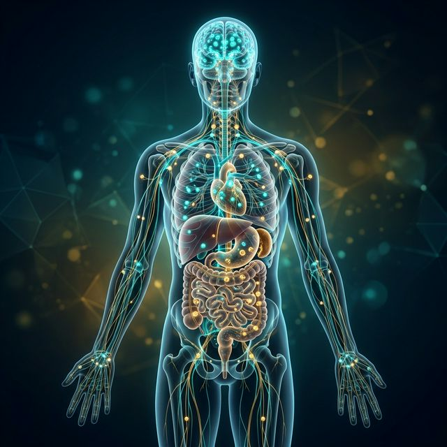

Ciência Botânica e o Sistema Endocanabinoide
A Cannabis não é "mágica", ela é ciência pura. Entenda como ela interage com seu corpo para promover o equilíbrio biológico.

A Cannabis não é uma substância mágica; ela é um fitocomplexo biológico que atua em sistema específico e onipresente no corpo humano: o Sistema Endocanabinoide (SEC).
Os Receptores CB1 e CB2
Imagine o SEC como uma rede de fechaduras espalhadas pelo corpo, onde os canabinoides são as chaves. Existem dois tipos principais de receptores:
- Receptores CB1: Localizados majoritariamente no cérebro e sistema nervoso central. Regulam dor, memória e funções motoras.
- Receptores CB2: Concentrados no sistema imunológico e órgãos periféricos. Eles modulam a inflamação e a resposta imunológica.
O Efeito Entorno (Entourage Effect):
Ao contrário dos isolados farmacêuticos tradicionais, os fitocanabinoides (CBD, THC, CBG) trabalham melhor em conjunto com os terpenos e flavonoides da planta. Essa sinergia potencializa os benefícios e reduz efeitos colaterais.
A Homeostase: O Equilíbrio
O papel fundamental do seu Sistema Endocanabinoide é manter a homeostase. Quando o corpo sofre um estresse (doença ou inflamação), o SEC entra em ação para restaurar o equilíbrio. O uso medicinal da Cannabis serve como um suporte externo para esse sistema quando ele não está mais produzindo endocanabinoides suficientes.
Quer entender a fundo a Bioquímica?
Leia nossos relatórios técnicos sobre Terpenos e como eles direcionam o tratamento para sintomas específicos.
Ler Artigo sobre Terpenos